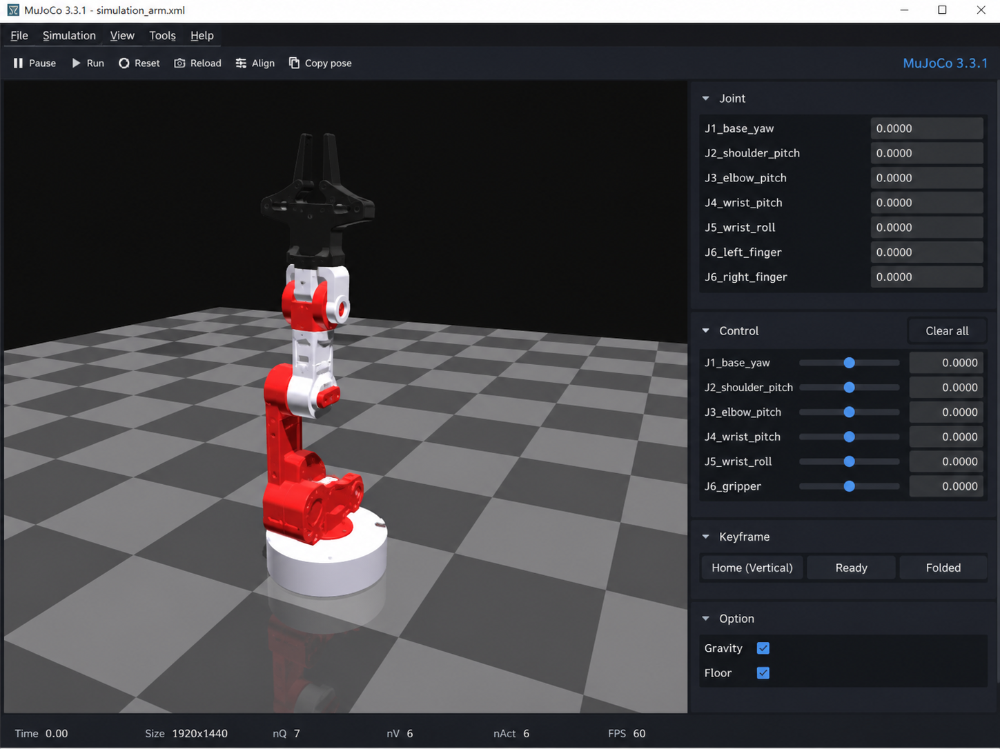

Independent project
2026
W-D1 · Custom 6-DOF Robotic Arm
A from-scratch manipulator spanning mechanical design, actuation, embedded control, a Python operator interface, and a MuJoCo digital twin.
STM32PythonMuJoCoCADTrajectory Planning
Built
- Custom 3D-printed joints, timing-belt reductions, bearings, shafts, and modular actuator mounts.
- Low-level stepper control and serial communication with a Python desktop GUI.
- MuJoCo digital twin with a trajectory pipeline for handwriting-path reproduction.
Engineering questions
- Joint torque, pulley ratio, belt tension, backlash, and structural stiffness.
- Encoder-based homing and closed-loop execution.
- Bridging simulation, control, perception, and future learning-based manipulation.